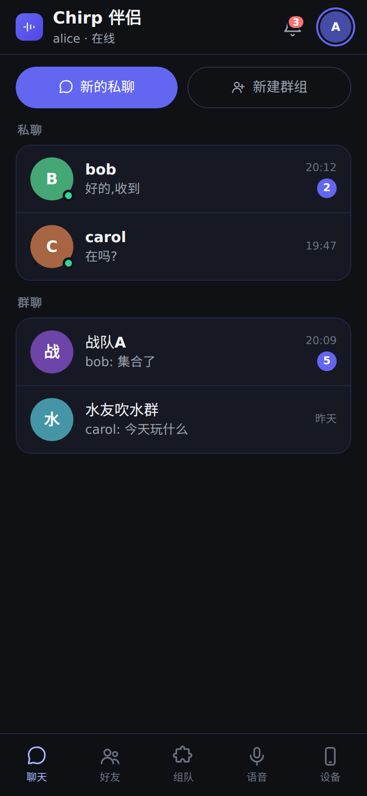
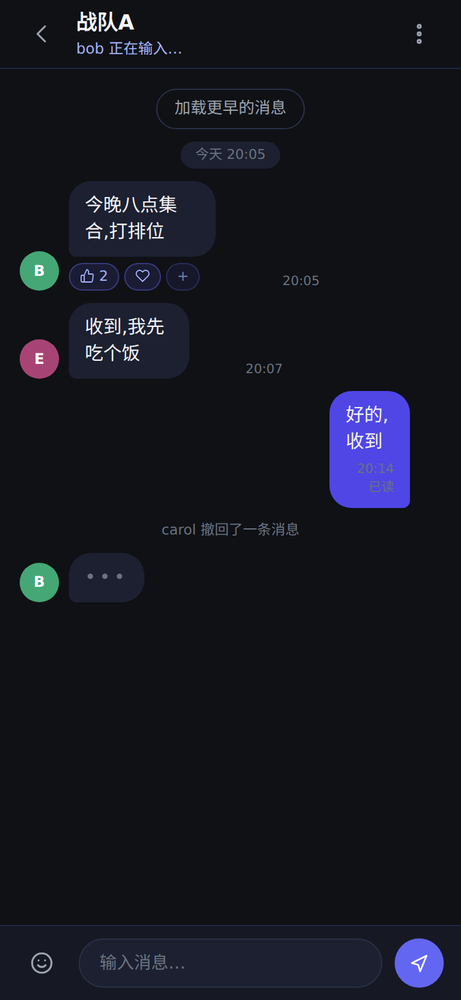
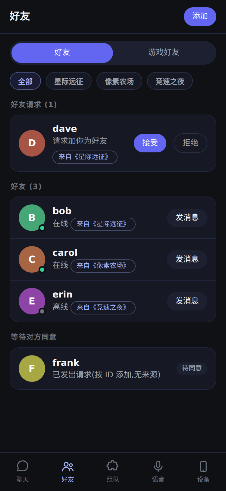
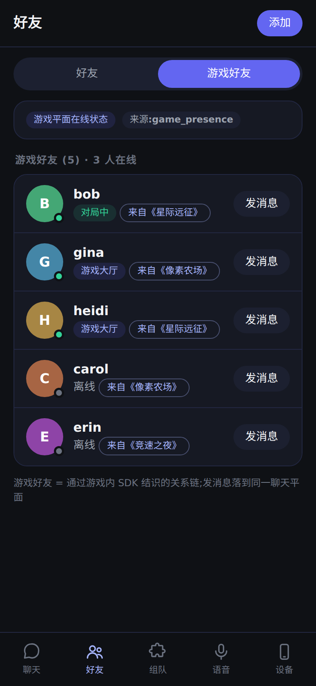
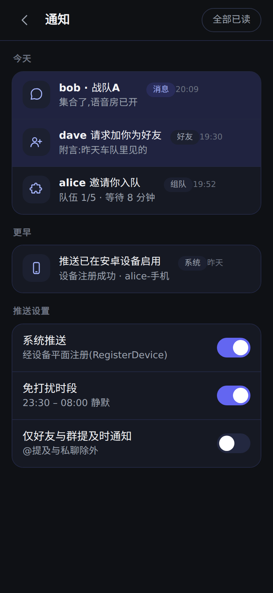
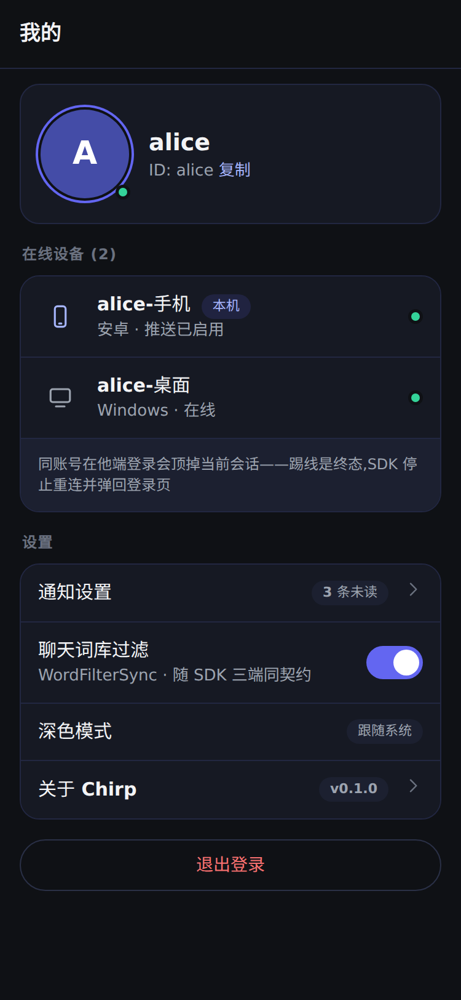

01 会话列表(首页)
五页签骨架 · 未读角标 · 双主操作 · 🔔/头像双顶栏入口
01-sessions.html

02 聊天窗口
typing 副标题 · 回应 chip · 已读回执 · 撤回系统行
02-chat.html

03 好友
请求处理 · 在线/离线 · 来源游戏标签+筛选(2026-10-07 修订)
03-friends.html(#game 切第二态)

03b 游戏好友
game_presence 在线 chip(对局中/大厅)· 来源标签 · 同一聊天平面
03-friends.html#game

04 通知
四类 chip · 未读高亮 · 推送设置(RegisterDevice 同源)
04-notifications.html

05 我的
在线设备卡 + 顶号契约 · 词库过滤 · 顶栏头像入口
05-profile.html